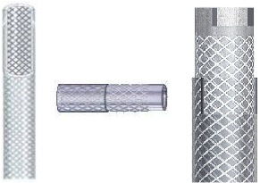

Duplon

Braided Hose Pipes
DUPLON is designed for high-pressure applications. It is superior replacement to conventional rubber hoses as it is made of PVC, which results in convenience due to lightweight and economy in use. DUPLON has superior consolidation and adhesion between the braids and covers, as compared to rubber hoses. DUPLON is designed to suit best in tropical climates like Indian, the Gulf and African sub-continents.
Composition : The hose is composed of reinforcement (Braiding) of synthetic yarn in between two or more layers of Soft PVC. The yarn is reinforced in crosswise as well as longitudinal directions.
 TOPLON PIPES
TOPLON PIPES GOODLON PIPES
GOODLON PIPES